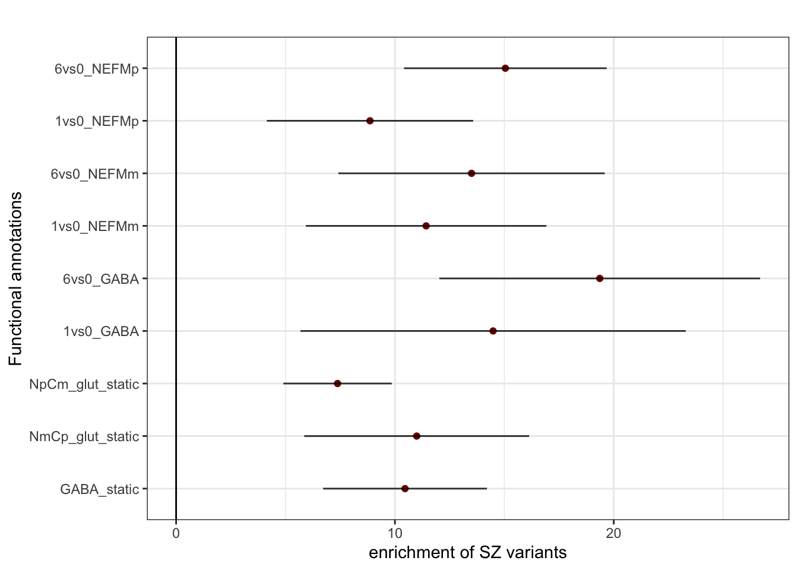
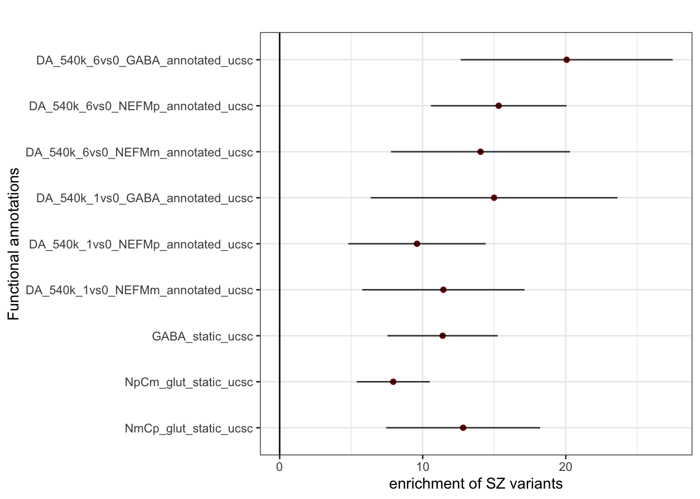
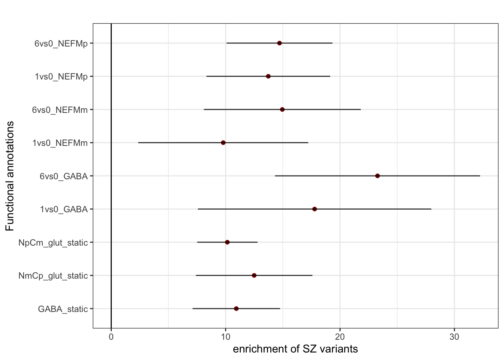

Stratified LD score regression
Last updated: 2022-03-20
Checks: 7 0
Knit directory: enrichment/
This reproducible R Markdown analysis was created with workflowr (version 1.7.0). The Checks tab describes the reproducibility checks that were applied when the results were created. The Past versions tab lists the development history.
Great! Since the R Markdown file has been committed to the Git repository, you know the exact version of the code that produced these results.
Great job! The global environment was empty. Objects defined in the global environment can affect the analysis in your R Markdown file in unknown ways. For reproduciblity it’s best to always run the code in an empty environment.
The command set.seed(20220215) was run prior to running the code in the R Markdown file. Setting a seed ensures that any results that rely on randomness, e.g. subsampling or permutations, are reproducible.
Great job! Recording the operating system, R version, and package versions is critical for reproducibility.
Nice! There were no cached chunks for this analysis, so you can be confident that you successfully produced the results during this run.
Great job! Using relative paths to the files within your workflowr project makes it easier to run your code on other machines.
Great! You are using Git for version control. Tracking code development and connecting the code version to the results is critical for reproducibility.
The results in this page were generated with repository version d73dfcd. See the Past versions tab to see a history of the changes made to the R Markdown and HTML files.
Note that you need to be careful to ensure that all relevant files for the analysis have been committed to Git prior to generating the results (you can use wflow_publish or wflow_git_commit). workflowr only checks the R Markdown file, but you know if there are other scripts or data files that it depends on. Below is the status of the Git repository when the results were generated:
Ignored files:
Ignored: .DS_Store
Ignored: .RData
Ignored: .Rhistory
Ignored: data/.DS_Store
Ignored: data/enrich_results/.DS_Store
Untracked files:
Untracked: dynamic_vs_static_marginal.tsv
Note that any generated files, e.g. HTML, png, CSS, etc., are not included in this status report because it is ok for generated content to have uncommitted changes.
These are the previous versions of the repository in which changes were made to the R Markdown (analysis/ld_enrichment.Rmd) and HTML (docs/ld_enrichment.html) files. If you’ve configured a remote Git repository (see ?wflow_git_remote), click on the hyperlinks in the table below to view the files as they were in that past version.
| File | Version | Author | Date | Message |
|---|---|---|---|---|
| Rmd | d73dfcd | Lifan Liang | 2022-03-20 | wflow_publish(c("analysis", "data")) |
| html | d0d04c1 | Lifan Liang | 2022-03-18 | Build site. |
| Rmd | c859c9e | Lifan Liang | 2022-03-18 | wflow_publish("analysis") |
| html | 16e4377 | Lifan Liang | 2022-03-18 | Build site. |
| Rmd | 6fd50c1 | Lifan Liang | 2022-03-18 | wflow_publish(c("analysis", "data")) |
| html | abe61f0 | Lifan Liang | 2022-03-14 | Build site. |
| Rmd | eb9aa79 | Lifan Liang | 2022-03-14 | wflow_publish("analysis") |
| html | 5676b96 | Lifan Liang | 2022-03-14 | Build site. |
| Rmd | 7b7cb0e | Lifan Liang | 2022-03-14 | wflow_publish("analysis") |
| html | e5d70c8 | Lifan Liang | 2022-03-11 | Build site. |
| Rmd | fc0c958 | Lifan Liang | 2022-03-11 | wflow_publish(c("analysis", "data")) |
| html | 5eb3f4a | Lifan Liang | 2022-03-07 | Build site. |
| Rmd | f8ad4c1 | Lifan Liang | 2022-03-07 | wflow_publish(c("analysis", "data")) |
| html | 1149591 | Lifan Liang | 2022-02-23 | Build site. |
| Rmd | 8245fac | Lifan Liang | 2022-02-23 | wflow_publish("analysis") |
| html | dee54c5 | Lifan Liang | 2022-02-23 | Build site. |
| Rmd | 3b87d27 | Lifan Liang | 2022-02-23 | wflow_publish(c("analysis", "data")) |
| html | 13cd49c | Lifan Liang | 2022-02-21 | Build site. |
| Rmd | d6a9b1b | Lifan Liang | 2022-02-21 | data |
Prepare input
- PGC3 summary statistics was merged with HapMap3 snplist.
- Full baseline model (53 annotation) from Alke’s group was used together
- LD score was computed using 1000G panel and the same list of SNPs as the baseline’s
Enrichment analysis for pseudo bulk peak sets
The annotation includes differential peaks (1v0hr and 6v0hr bothside of fold change), resting condition peaks called directly through MACS2 by merging cells within the same cell type and time point, and “static” peaks that remains in resting condition after removing the differential peaks.<> Please note that enrichment estimate in S-LDSC is the proportion of heritability (\(h^2\)) devided by the proportion of causal SNPs. In “Comparison of heritability”, we only showed \(h^2\).
Dynamic elements vs. static elements from pseudo bulk (joint analysis)

Comparison of heritability in pseudo bulk (joint analysis)

Dynamic elements vs. static elements from pseudo bulk (marginal analysis)

Diverse diseases (joint analysis)

Enrichment analysis for Signac peak sets
Dynamic elements vs. static elements (joint analysis)
We rerun stratified LD score regression with a smaller peak sets of resting condition (0hr). 0hr peaks are called through MACS2-signac. The number of peaks are much smaller. 0hr peaks are more enriched than the differential peaks. Still, when the differential elements were removed from 0hr peaks (“static” peaks in the plot), the enrichment is reduced dramatically.
Comparison of heritability of peak sets (joint analysis)
Dynamic elements vs. static elements (marginal analysis)
We run S-LDSC with each annotation one at a time. Baseline model was always included.
| Version | Author | Date |
|---|---|---|
| 16e4377 | Lifan Liang | 2022-03-18 |
Applying to diverse diseases (joint analysis)
Enrichment analysis applied to various diseases
| Version | Author | Date |
|---|---|---|
| 16e4377 | Lifan Liang | 2022-03-18 |
$title
[1] "S-LDSC enrichment analysis"
attr(,"class")
[1] "labels"
sessionInfo()R version 4.1.2 (2021-11-01)
Platform: x86_64-apple-darwin17.0 (64-bit)
Running under: macOS Big Sur 10.16
Matrix products: default
BLAS: /Library/Frameworks/R.framework/Versions/4.1/Resources/lib/libRblas.0.dylib
LAPACK: /Library/Frameworks/R.framework/Versions/4.1/Resources/lib/libRlapack.dylib
locale:
[1] en_US.UTF-8/en_US.UTF-8/en_US.UTF-8/C/en_US.UTF-8/en_US.UTF-8
attached base packages:
[1] stats graphics grDevices utils datasets methods base
other attached packages:
[1] ggplot2_3.3.5 workflowr_1.7.0
loaded via a namespace (and not attached):
[1] tidyselect_1.1.1 xfun_0.29 purrr_0.3.4 colorspace_2.0-2
[5] vctrs_0.3.8 generics_0.1.2 htmltools_0.5.2 yaml_2.2.2
[9] utf8_1.2.2 rlang_1.0.0 jquerylib_0.1.4 later_1.3.0
[13] pillar_1.7.0 glue_1.6.1 withr_2.4.3 DBI_1.1.2
[17] lifecycle_1.0.1 stringr_1.4.0 munsell_0.5.0 gtable_0.3.0
[21] evaluate_0.14 labeling_0.4.2 knitr_1.37 callr_3.7.0
[25] fastmap_1.1.0 httpuv_1.6.5 ps_1.6.0 fansi_1.0.2
[29] highr_0.9 Rcpp_1.0.8 promises_1.2.0.1 scales_1.1.1
[33] farver_2.1.0 fs_1.5.2 digest_0.6.29 stringi_1.7.6
[37] processx_3.5.2 dplyr_1.0.7 getPass_0.2-2 rprojroot_2.0.2
[41] grid_4.1.2 cli_3.1.1 tools_4.1.2 magrittr_2.0.2
[45] tibble_3.1.6 crayon_1.4.2 whisker_0.4 pkgconfig_2.0.3
[49] ellipsis_0.3.2 assertthat_0.2.1 rmarkdown_2.11 httr_1.4.2
[53] rstudioapi_0.13 R6_2.5.1 git2r_0.29.0 compiler_4.1.2